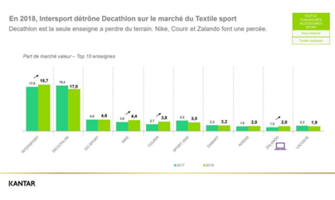
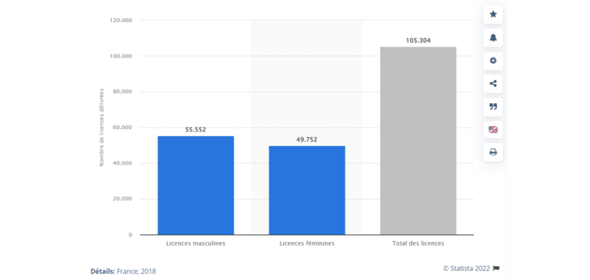

Marché du sport

Cette baisse est liée à cause de la pandémie mondiale du COVID-19 et les confinements qui ont impactées la demande dans le secteur du volley mais aussi le marché des sports dans sa globalité. Mais tout ceci montre une évolution de 86% de nombre de licenciés comparé à 1986 qui montre l’augmentation de l’intérêt du volley et l’évolution du marché qui est plus attractif.
Le Beach Volley s'implante difficilement malgré la croissance de la fréquence du linéaire côtier comparé aux volley-balls qui est plus demandées car il peut être exercés partout comparer au Beach Volley qui nécessite d’être prêt des côtes. Malgré ça la demande à récemment grimpé en 2020 avec une hausse de 30% pour le Beach volley, ceci est arrivé après le confinement qui à solliciter les gens de sortir et d’aller sur les plages pendant les mois de juillet/août après ce confinement.
Cette attraction et la demande dans le volley se fait par plusieurs raisons :
Une activité sportive ludique et accessible à tous Un sport qui présente peu de risques
L’attractivité et la demande du Beach Volley dépend des périodes estivales, il y a une forte croissance durant cette période, mais durant les périodes hivernales l’attractivité et la demande est en déclin contrairement au volley-ball ou généralement la demande et l’attractivité est stable.
La demande de la majorité des clients lambda généralement ne regarde pas les marques de ballons, de filet, d’équipement (comme les protections) il se fie généralement au rapport qualité/prix. La demande des clubs se fait sur la recherche de produits de bonne marque et de bonne qualité. La demande des entreprises distributrices et des grossistes est équilibrée entre la recherche de produits à bas prix en quantité mais aussi de produits de qualité en quantité. La demande des fans du volley qui vont regarder et suivre les tournois, match, championnat et qui souhaite posséder des équipements similaires à leur équipe/joueurs préférés mais aussi ceux qui regarde pour juste regarder mais qui ne sont pas intéressé à pratiquer le sport.
On retrouve généralement une clientèle tout sexe confondu de 12-40 ans pour le volley-ball et une clientèle féminine de 10-30 ans pour le beach-volley, aussi le beach-volley va posséder une clientèle avec une mentalité plus fun et détente.
Sur le marché Français, nous constatons qu’il y a plusieurs entreprises présentes, au niveau de la distribution nous avons décathlon et Intersport qui dominent le marché Français dont Intersport a détrôné décathlon récemment. Au niveau des fournisseurs, les grossistes comme Intersport et Décathlon se chargent aussi de cette fonctionnalité, et sont eux aussi leader dans ce domaine, et nous avons en tant que constructeurs, Mikasa ou Molten qui dominent le marché Français. Dans la grande distribution nous constatons deux grands vendeurs, Décathlon et Intersport, dont Intersport prend 18.7% et Décathlon 17%, soit 35.7% de part de marché, derrière Gosport avec 4.6%. Pour les entreprises leaders de la vente de ballons dans le monde entier nous trouvons notamment, Mikasa, Wilson, ou encore Molten.
